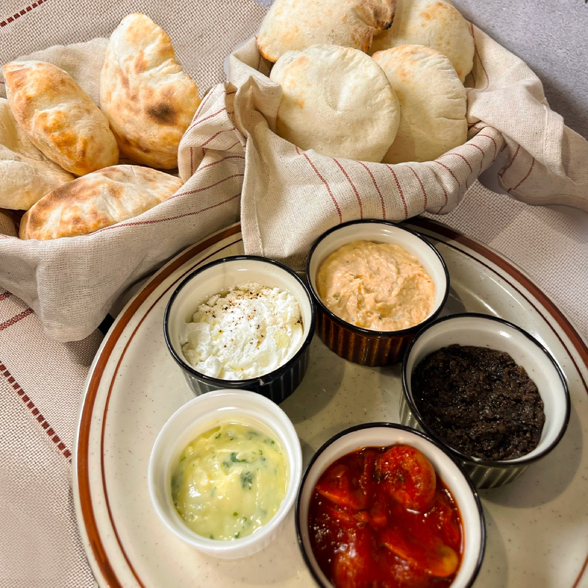
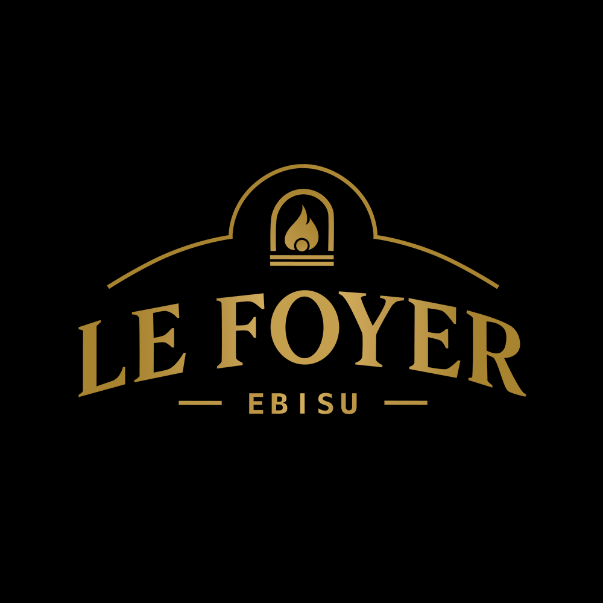
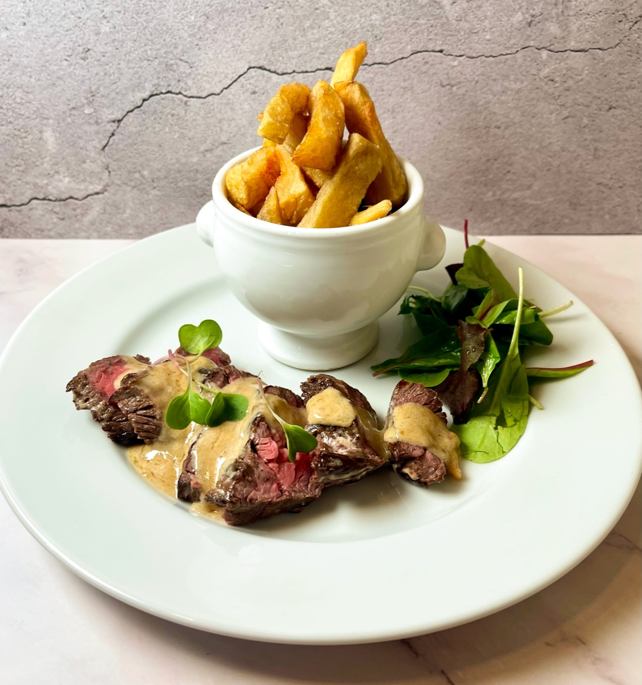
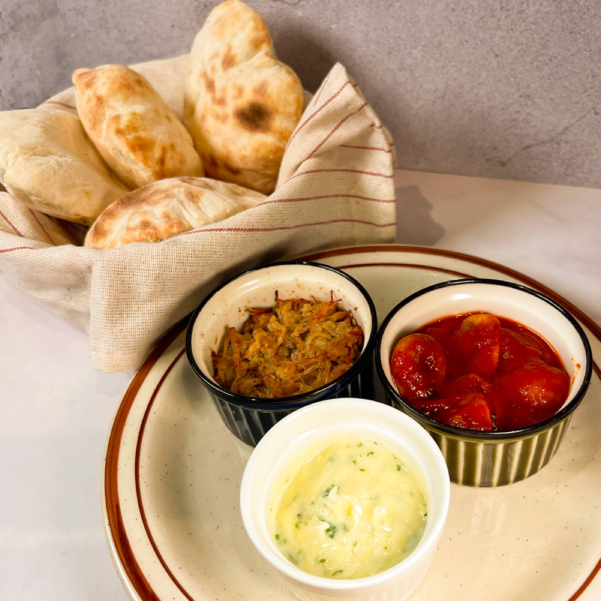
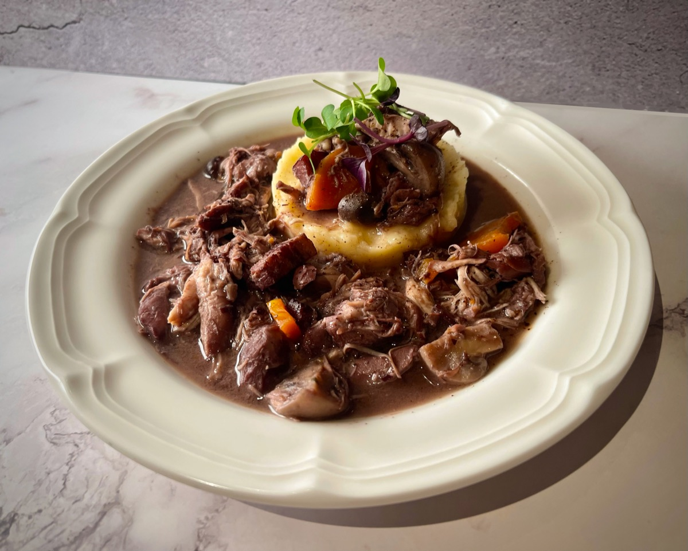
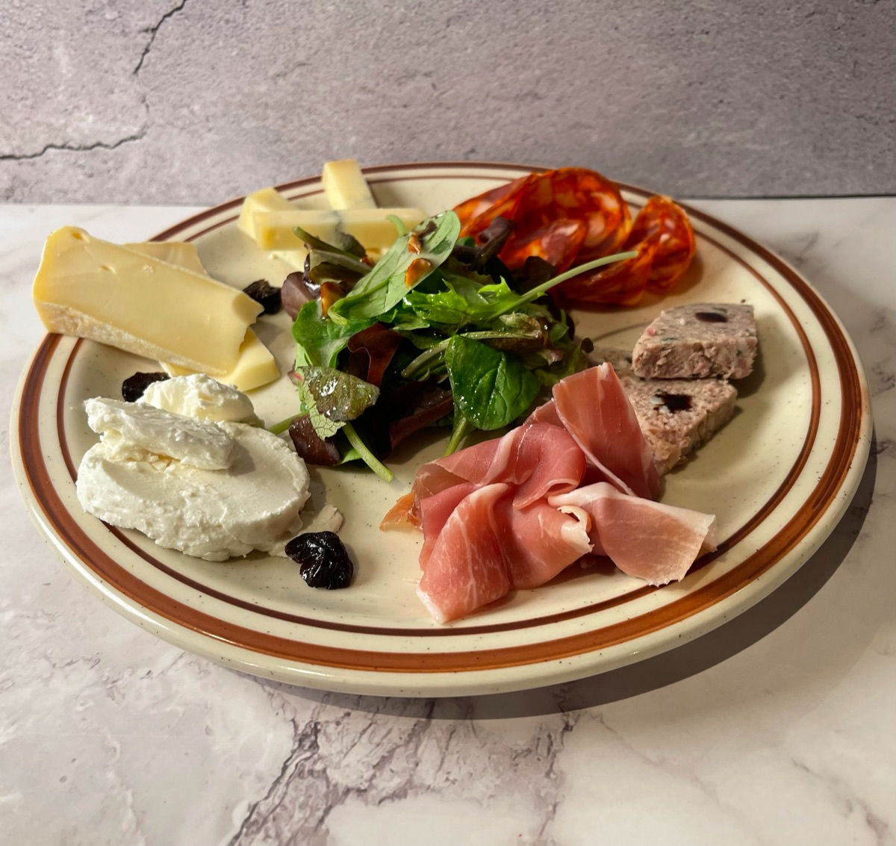
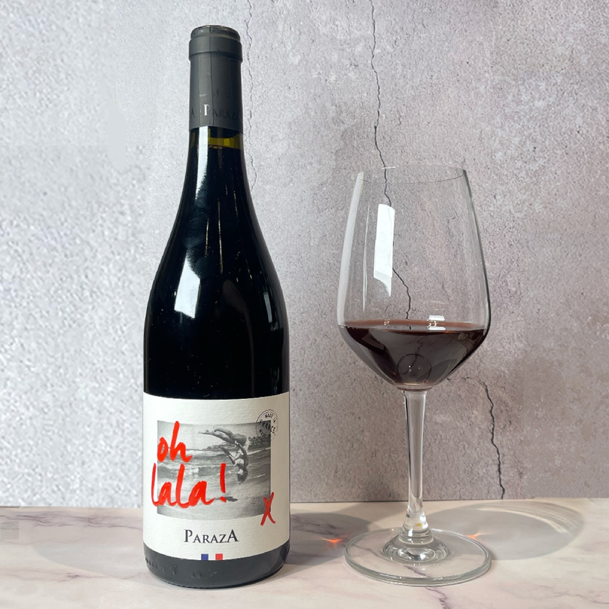
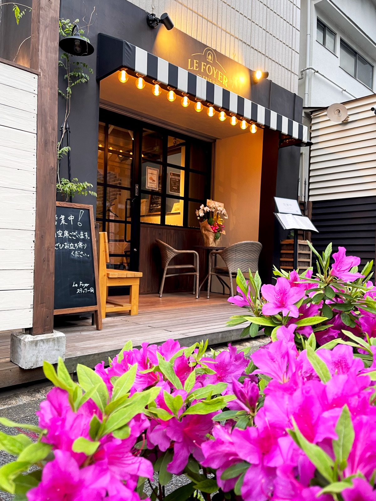
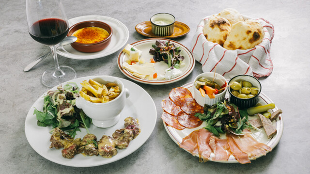
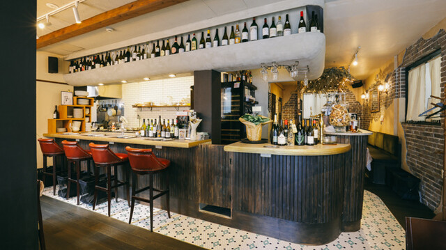

SIGNATURE
Fouées / フエ
焼きたての小さなパンに、リエット、タプナード、チーズなどを合わせて。

French Bistro & Wine Bar フレンチビストロ & ワインバー
火曜 - 日曜 / Tuesday - Sunday
11:45 - 14:00 17:30 - 22:30




わんちゃん同伴歓迎
Well-behaved dogs are welcome indoors and on our patio.
SIGNATURE
焼きたての小さなパンに、リエット、タプナード、チーズなどを合わせて。

ACCESS
東京都渋谷区恵比寿 2-9-1
2-9-1 Ebisu, Shibuya-ku, Tokyo

LUNCH
ランチセット、オムレツ、クロック、ステーキフリットなど。

DINNER
前菜、メイン、デザート、ワインをビストロスタイルで。